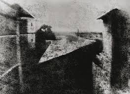

Timeline of Historic Events in Photography
The first photograph
William Henry Fox Talbot's Salt Print
Daguerre
Kodak
The first digital camera
The first image ever taken

Image Credit: 1879
This image took 8 hours to make. Frenchman Nicephore Niepse made this image outside his Paris window